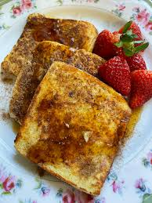

Home
French Toast

Description
These are bomb AF.
Ingredients
- 4 slices Day-Old French Bread (1/2 inch thick)
- 2 eggs
- 1/4 cup Milk
- 1/2 tsp Vanilla
- 2 Tbsp Brown Sugar
- 1/2 tsp Cinnamon
Topping
- Favorite Syrup
- Butter
- Icing Sugar
- Berries
Directions
- In a medium sized bowl, whisk together eggs, milk, vanilla, brown sugar and cinnamon. Set aside.
- Heat a medium to large sized skillet on medium heat. Melt about a tablespoon of butter in the skillet and make sure the entire skillet is covered.
- Dip one slice of bread into the egg mixture and place in the heated skillet. Repeat with as many as your skillet can hold at one time.
- Cook on medium heat until lightly browned on the bottom then flip to cook the other side to golden brown.
- Remove to plate. Serve warm with your favorite syrup and toppings.